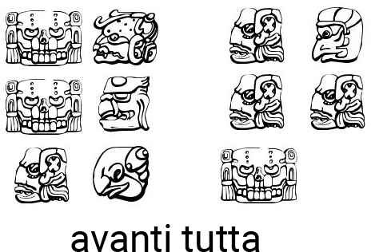
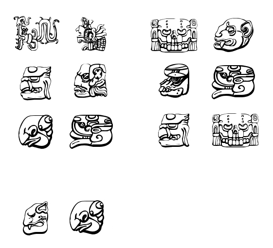

Enigma Extra 1
Dato il seguente schema, prova a decifrare il messaggio subito sotto


Dopo aver risolto l'enigma e dato la combinazione esatta, la valigetta inviata dal dipartimento di difesa si sblocca magneticamente e, una volta aperta, rivela un foglio in carta incendiabile che riporta la seguente frase: "L'enigma è l'indizio!".
Enigma Extra 2
In una strada ci sono 5 case dipinte di 5 colori diversi. In ogni casa vive una persona di differente nazionalità e ciascuno dei padroni di casa beve una bevanda diversa, fuma una marca di sigarette diversa, tiene un animaletto diverso.
Date le seguenti informazioni:
- Ci sono cinque case.
- L'inglese vive nella casa rossa.
- Lo spagnolo è proprietario del cane.
- Il caffè è bevuto nella casa verde.
- Il tè è bevuto dall'ucraino.
- La casa verde è immediatamente a sinistra della casa avorio.
- Il fumatore Old Gold possiede lumache.
- Le Kool sono fumate nella casa gialla.
- Il latte è bevuto nella casa in mezzo.
- Il norvegese vive nella prima casa.
- L'uomo che fuma Chesterfield vive nella casa accanto all'uomo con la volpe.
- Le Kool sono fumate nella casa vicino a quella dove si tiene il cavallo.
- Chi fuma le Lucky Strike beve succo d'arancia.
- Il giapponese fuma Parliament.
- Il norvegese vive vicino alla casa blu.
Chi beve l'acqua?
Chi possiede la zebra?
indica la soluzione con i lunero assegnato alla casa da 1 a 5.
Dopo aver risolto l'enigma e dato la combinazione esatta, la valigetta inviata dal dipartimento di difesa si sblocca magneticamente e, una volta aperta, rivela un foglio in carta incendiabile che riporta la seguente frase: "Ogni direzione cardinale è rappresentata da un numero!".
Enigma Extra 3
Esiste un numero misterioso di dieci cifre (senza 0 iniziale), rappresentato da ABCDEFGHIJ, dove ogni numero, da 0 a 9, viene utilizzato una volta. Dati i seguenti indizi, qual è il numero?
1) A = B / 3 ma anche A = SOL + 3.
2) B = I - 4 ma anche B = E + 4.
3) C = J + 2 oppure C = F * 3.
4) D = SOL * 4 oppure D = MI / 3.
5) E = J - 1 oppure E = D / 4.
6) F = B * 2 ma anche F = A - 4.
7) G = F + 1 oppure G = I - 3.
8) H = A / 2 ma anche H = C * 3.
9) I = H + 3 oppure I = D / 2.
10) J = H - 2 ma anche J = C * 2.
Dopo aver risolto l'enigma e dato la combinazione esatta, la valigetta inviata dal dipartimento di difesa si sblocca magneticamente e, una volta aperta, rivela un foglio in carta incendiabile che riporta la seguente frase: "Fai corrispondere i numeri e i punti cardinali, quindi prova a ricercarli in tutte le tue risposte precedenti".